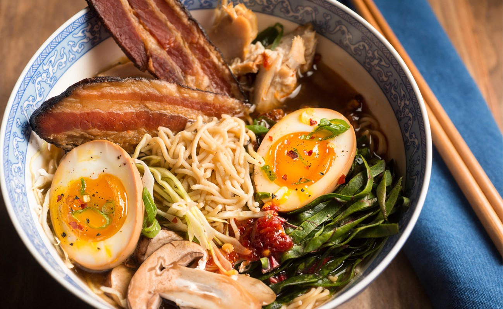

Lamen.

- 100g de Manteiga (em ponto de pomada)
- Raspas de 1 Limão
- +ou- ½ Colher (chá) de Gengibre Ralado
- +ou- ¼ Colher (chá) de Cominho em Pó
- 1Kg de Lombo Suíno Temperado
- 1 Colher (sopa) de Azeite
- +ou- 1 Colher (chá) de Sal
- +ou- ½ Colher (chá) de Pimenta do Reino
- 1 Cabeça de Alho
- 1 Limão (fatiado em 4)
- Ramos de Alecrim (a gosto)
- Ramos de Tomilho (a gosto)
- 4 Ovos (em temperatura ambiente)
- 250g de Macarrão para yakisoba ou instantâneo.
- 1 Litro Água
- 2 Cubos de Caldo de Legumes (caseiro)
- 2 cm de Gengibre
- 1 Cebola cortada em 4 partes
- 50ml de Saque Mirin (ou Vinagre de Vinho Branco)
- 1 Colher (sopa) de Óleo de Gergelim Torrado
- 1 Xícara (chá) de Molho Shoyu
- 500ml de Água Quente
- milho cozido
- Alga nari
- Cebolinha (picada)
Modo de preparo
-
Lombo Assado: Em uma tigela coloque um pouco de manteiga, raspas de limão,
gengibre ralado, cominho em pó e misture bem.
-
Pegue um lombo e besunte com um pouco de azeite, sal e pimenta do reino, aqueça muito bem
uma panela e doure a carne de todos os lados.
-
Coloque a carne em uma assadeira forrada com papel alumínio e cubra com a manteiga temperada e coloque
junto na forma o limão fatiado, ramos de alecrim, ramos de tomilho e 1 cabeça de alho com o topo cortado.
-
Leve para assar em forno preaquecido a 230°C por cerca de 30 minutos, retire do forno e deixe gelar para
facilitar o corte.
-
Ovos Cozidos: Em uma panela com água fervente coloque os ovos e cozinhe! Ai você pode deixar a gema mais mole ou mais
firme! Para gema mole cozinhar por cerca de 7 minutos já o Ovos mais firmes cozinhar por 13 minutos. Assim que der o tempo, colo
oque em uma tigela com água e gelo para parar o cozimento e tá pronto.
-
Macarrão: Para o macarrão aqui pode ser aquele instantâneo ou de yakisoba em uma panela com água quente coloque para cozinhar a porção
que você for usar, aqui eu to fazendo para 4 pessoas então to fazendo 250g e ai só deixar cozinhar conforme as instruções do fabricante ou ficar
macio.
-
Caldo: Em uma panela grande coloque a água, cubos do caldo caseiro, junte o gengibre, cebola, saque, óleo de gergelim, pasta de misso, molho shoyu e cozinhe em
fogo baixo com a tampa e deixe cozinhar até começar ferver. Abra a tampa e deixe cozinhar por mais 20 minutos, remova os pedaços (cebola, gengibre) junte a água quente e
misture bem.
-
Para Montar: Coloque o Macarrão, Carne Fatiada, Ovos, Milho e Alga Nori,
finalize com o caldo bem quente e a cebolinha.
Clebridade com quem dividiria esse prato.